Lecciones de circuitos eléctricos - Volumen II
Capítulo 3
REACTANCIA E IMPEDANCIA -- INDUCTIVA
- AC resistor circuits
- AC inductor circuits
- Series resistor-inductor circuits
- Parallel resistor-inductor circuits
- Inductor quirks
- More on the “skin effect”
- Contributors
AC resistor circuits
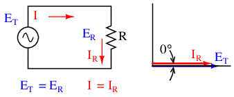
Circuito de CA resistivo puro: el voltaje y la corriente de la resistencia están en fase.
Si tuviéramos que trazar la corriente y el voltaje para un circuito de CA muy simple que consta de una fuente y una resistencia (Figura above), se vería así: (Figura below)
{kind=link}
{kind=link}
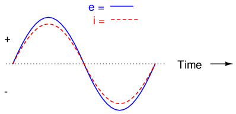
Tensión y corriente “en fase” para circuito resistivo.
Debido a que la resistencia resiste simple y directamente el flujo de electrones en todos los períodos de tiempo, la forma de onda de la caída de voltaje a través de la resistencia está exactamente en fase con la forma de onda de la corriente que la atraviesa. Podemos observar cualquier punto en el tiempo a lo largo del eje horizontal del gráfico y comparar esos valores de corriente y voltaje entre sí (cualquier mirada “instantánea” a los valores de una onda se conoce comovalores instantáneos, es decir, los valores en eseinstantea tiempo). Cuando el valor instantáneo de la corriente es cero, el voltaje instantáneo a través de la resistencia también es cero. Del mismo modo, en el momento en que la corriente a través de la resistencia está en su pico positivo, el voltaje a través de la resistencia también está en su pico positivo, y así sucesivamente. En cualquier momento dado a lo largo de las ondas, la Ley de Ohm es válida para los valores instantáneos de voltaje y corriente.
También podemos calcular la potencia disipada por esta resistencia y trazar esos valores en el mismo gráfico: (Figura below)
{kind=link}

La potencia de CA instantánea en un circuito resistivo puro siempre es positiva.
Tenga en cuenta que la potencia nunca es un valor negativo. Cuando la corriente es positiva (por encima de la línea), el voltaje también es positivo, lo que da como resultado una potencia (p=ie) de valor positivo. Por el contrario, cuando la corriente es negativa (debajo de la línea), el voltaje también es negativo, lo que resulta en un valor positivo de potencia (un número negativo multiplicado por un número negativo es igual a un número positivo). Esta "polaridad" constante de potencia nos dice que la resistencia siempre está disipando potencia, tomándola de la fuente y liberándola en forma de energía térmica. Ya sea que la corriente sea positiva o negativa, una resistencia aún disipa energía.
AC inductor circuits
Los inductores no se comportan igual que las resistencias. Mientras que las resistencias simplemente se oponen al flujo de electrones a través de ellas (al disminuir un voltaje directamente proporcional a la corriente), los inductores se oponen.cambiosen corriente a través de ellos, al hacer caer un voltaje directamente proporcional a latasa de cambiode corriente. De acuerdo conLey de Lenz, este voltaje inducido siempre tiene una polaridad tal que intenta mantener la corriente en su valor actual. Es decir, si la magnitud de la corriente aumenta, el voltaje inducido “empujará contra” el flujo de electrones; Si la corriente disminuye, la polaridad se invertirá y “empujará” el flujo de electrones para oponerse a la disminución. Esta oposición al cambio actual se llamaresistencia reactiva, en lugar de resistencia.
Expresada matemáticamente, la relación entre la caída de voltaje a través del inductor y la tasa de cambio de corriente a través del inductor es la siguiente:
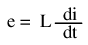
la expresióndi/dtes uno de cálculo, es decir, la tasa de cambio de la corriente instantánea (i) a lo largo del tiempo, en amperios por segundo. La inductancia (L) está en Henrys y el voltaje instantáneo (e), por supuesto, está en voltios. A veces encontrará la tasa de voltaje instantáneo expresada como “v” en lugar de “e” (v = L di/dt), pero significa exactamente lo mismo. Para mostrar lo que sucede con la corriente alterna, analicemos un circuito inductor simple: (Figura below)
{kind=link}
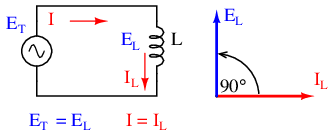
Circuito inductivo puro: la corriente del inductor retrasa el voltaje del inductor en 90o.
Si tuviéramos que trazar la corriente y el voltaje para este circuito muy simple, se vería así: (Figura below)
{kind=link}
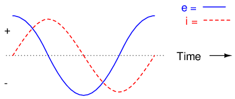
Circuito inductivo puro, formas de onda.
Recuerde, la caída de voltaje a través de un inductor es una reacción contra elcambiaren corriente a través de él. Por lo tanto, el voltaje instantáneo es cero siempre que la corriente instantánea está en un pico (cambio cero, o pendiente de nivel, en la onda sinusoidal actual), y el voltaje instantáneo está en un pico dondequiera que la corriente instantánea esté en su cambio máximo (los puntos de pendiente más pronunciada en la onda de corriente, donde cruza la línea cero). Esto da como resultado una onda de voltaje de 90odesfasado con la ola actual. Mirando el gráfico, la onda de voltaje parece tener una “ventaja” sobre la onda actual; el voltaje “se adelanta” a la corriente, y la corriente “se retrasa” respecto del voltaje. (Cifra below)
{kind=link}
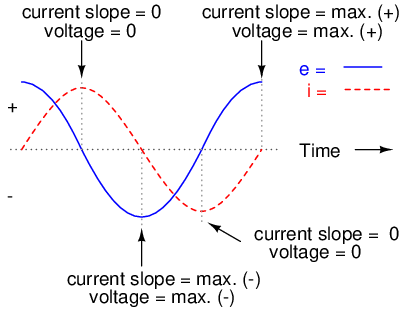
La corriente retrasa el voltaje en 90oen un circuito inductivo puro.
Las cosas se vuelven aún más interesantes cuando trazamos la potencia de este circuito: (Figura below)
{kind=link}

En un circuito inductivo puro, la potencia instantánea puede ser positiva o negativa.
Debido a que la potencia instantánea es el producto del voltaje instantáneo y la corriente instantánea (p=ie), la potencia es igual a cero siempre que la corriente instantáneaorel voltaje es cero. Siempre que la corriente y el voltaje instantáneos sean positivos (por encima de la línea), la potencia es positiva. Al igual que en el ejemplo de la resistencia, la potencia también es positiva cuando la corriente y el voltaje instantáneos son negativos (debajo de la línea). Sin embargo, debido a que las ondas de corriente y voltaje son 90ofuera de fase, hay momentos en que uno es positivo mientras que el otro es negativo, lo que resulta en ocurrencias igualmente frecuentes depotencia instantánea negativa.
Pero ¿qué hacenegativopoder significa? Significa que el inductor está liberando energía al circuito, mientras que una potencia positiva significa que está absorbiendo energía del circuito. Dado que los ciclos de potencia positivos y negativos son iguales en magnitud y duración a lo largo del tiempo, el inductor libera al circuito tanta potencia como la que absorbe durante el lapso de un ciclo completo. Lo que esto significa en un sentido práctico es que la reactancia de un inductor disipa una energía neta de cero, a diferencia de la resistencia de una resistencia, que disipa energía en forma de calor. Eso sí, esto es sólo para inductores perfectos, que no tienen resistencia de cable.
La oposición de un inductor al cambio de corriente se traduce en una oposición a la corriente alterna en general, que por definición siempre cambia en magnitud y dirección instantáneas. Esta oposición a la corriente alterna es similar a la resistencia, pero se diferencia en que siempre da como resultado un cambio de fase entre la corriente y el voltaje y disipa energía cero. Debido a las diferencias, tiene un nombre diferente:resistencia reactiva. La reactancia de CA se expresa en ohmios, al igual que la resistencia, excepto que su símbolo matemático es X en lugar de R. Para ser específicos, la reactancia asociada con un inductor generalmente se simboliza con la letra mayúscula X con una letra L como subíndice, así: XL.
Dado que los inductores reducen el voltaje en proporción a la tasa de cambio de corriente, reducirán más voltaje para corrientes que cambian más rápido y menos voltaje para corrientes que cambian más lentamente. Lo que esto significa es que la reactancia en ohmios de cualquier inductor es directamente proporcional a la frecuencia de la corriente alterna. La fórmula exacta para determinar la reactancia es la siguiente:
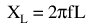
Si exponemos un inductor de 10 mH a frecuencias de 60, 120 y 2500 Hz, manifestará las reactancias en la Tabla Figura below.
Reactance of a 10 mH inductor:
| Frecuencia (Hercios) | Reactancia (Ohmios) |
|---|---|
| 60 | 3.7699 |
| 120 | 7.5398 |
| 2500 | 157.0796 |
En la ecuación de reactancia, el término "2πf" (todo lo que está en el lado derecho excepto L) tiene un significado especial en sí mismo. Es el número de radianes por segundo al que “gira” la corriente alterna, si imagina que un ciclo de CA representa la rotación de un círculo completo. Aradiánes una unidad de medida angular: hay 2π radianes en un círculo completo, al igual que hay 360oen un círculo completo. Si el alternador que produce CA es una unidad bipolar, producirá un ciclo por cada vuelta completa de rotación del eje, que es cada 2π radianes, o 360o. Si esta constante de 2π se multiplica por la frecuencia en Hertz (ciclos por segundo), el resultado será una cifra en radianes por segundo, conocida comovelocidad angulardel sistema de CA.
La velocidad angular puede representarse mediante la expresión 2πf, o puede representarse mediante su propio símbolo, la letra griega minúscula Omega, que parece similar a nuestra “w” minúscula romana: ω. Por tanto, la fórmula de reactancia XL= 2πfL también podría escribirse como XL= ωL.
Debe entenderse que esta “velocidad angular” es una expresión de la rapidez con la que las formas de onda de CA están ciclando, siendo un ciclo completo igual a 2π radianes. No es necesariamente representativo de la velocidad real del eje del alternador que produce CA. Si el alternador tiene más de dos polos, la velocidad angular será un múltiplo de la velocidad del eje. Por esta razón, ω a veces se expresa en unidades deeléctricoradianes por segundo en lugar de radianes (simples) por segundo, para distinguirlo del movimiento mecánico.
Cualquiera que sea la forma en que expresemos la velocidad angular del sistema, es evidente que es directamente proporcional a la reactancia en un inductor. A medida que aumenta la frecuencia (o la velocidad del eje del alternador) en un sistema de CA, un inductor ofrecerá una mayor oposición al paso de la corriente y viceversa. La corriente alterna en un circuito inductivo simple es igual al voltaje (en voltios) dividido por la reactancia inductiva (en ohmios), del mismo modo que la corriente alterna o continua en un circuito resistivo simple es igual al voltaje (en voltios) dividido por la resistencia (en ohmios). Aquí se muestra un circuito de ejemplo: (Figura below)
{kind=link}
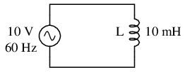
Reactancia inductiva
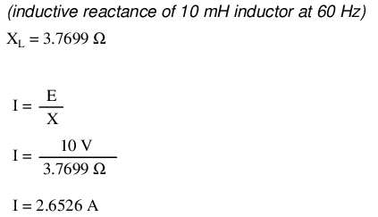
Sin embargo, debemos tener en cuenta que aquí el voltaje y la corriente no están en fase. Como se mostró anteriormente, el voltaje tiene un cambio de fase de +90ocon respecto a la corriente. (Cifra below) Si representamos matemáticamente estos ángulos de fase de tensión y corriente en forma de números complejos, encontramos que la oposición de un inductor a la corriente también tiene un ángulo de fase:
{kind=link}
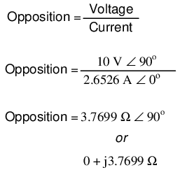
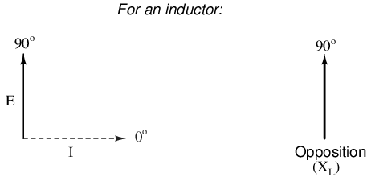
La corriente retrasa el voltaje en 90oen un inductor.
Matemáticamente, decimos que el ángulo de fase de la oposición de un inductor a la corriente es 90o, lo que significa que la oposición de un inductor a la corriente es una cantidad imaginaria positiva. Este ángulo de fase de oposición reactiva a la corriente adquiere una importancia crítica en el análisis de circuitos, especialmente para circuitos de CA complejos donde interactúan la reactancia y la resistencia. Será beneficioso representaranyoposición del componente a la corriente en términos de números complejos en lugar de cantidades escalares de resistencia y reactancia.
- REVISAR:
- Reactancia inductivaes la oposición que ofrece un inductor a la corriente alterna debido a su almacenamiento desfasado y liberación de energía en su campo magnético. La reactancia está simbolizada por la letra mayúscula "X" y se mide en ohmios al igual que la resistencia (R).
- La reactancia inductiva se puede calcular usando esta fórmula: XL= 2πfL
- The velocidad angularde un circuito de CA es otra forma de expresar su frecuencia, en unidades de radianes eléctricos por segundo en lugar de ciclos por segundo. Está simbolizado por la letra griega minúscula "omega" o ω.
- Reactancia inductivaaumentacon frecuencia cada vez mayor. En otras palabras, cuanto mayor es la frecuencia, más se opone al flujo de electrones en CA.
Series resistor-inductor circuits
En la sección anterior, exploramos lo que sucedería en circuitos de CA simples de solo resistencia y solo de inductor. Ahora mezclaremos los dos componentes en serie e investigaremos los efectos.
Tome este circuito como ejemplo para trabajar: (Figura below)
{kind=link}
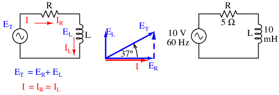
Circuito inductor de resistencia en serie: la corriente retrasa el voltaje aplicado en 0oa 90o.
La resistencia ofrecerá 5 Ω de resistencia a la corriente CA independientemente de la frecuencia, mientras que el inductor ofrecerá 3,7699 Ω de reactancia a la corriente CA a 60 Hz. Debido a que la resistencia del resistor es un número real (5 Ω ∠ 0o, o 5 + j0 Ω), y la reactancia del inductor es un número imaginario (3,7699 Ω ∠ 90o, o 0 + j3.7699 Ω), el efecto combinado de los dos componentes será una oposición a la corriente igual a la suma compleja de los dos números. Esta oposición combinada será una combinación vectorial de resistencia y reactancia. Para expresar esta oposición de manera sucinta, necesitamos un término más amplio para la oposición a la corriente que el de resistencia o reactancia por sí solas. Este término se llamaimpedancia, su símbolo es Z, y también se expresa en la unidad de ohmios, al igual que la resistencia y la reactancia. En el ejemplo anterior, la impedancia total del circuito es:
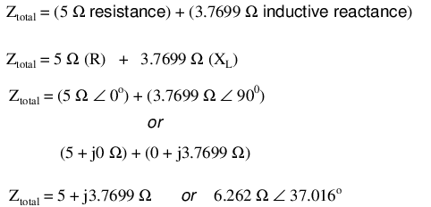
La impedancia está relacionada con el voltaje y la corriente tal como era de esperar, de manera similar a la resistencia en la Ley de Ohm:
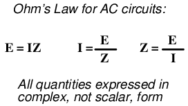
De hecho, ésta es una forma mucho más completa de la Ley de Ohm que la que se enseñaba en la electrónica de CC (E=IR), del mismo modo que la impedancia es una expresión mucho más completa de oposición al flujo de electrones que la resistencia.AnyLa resistencia y cualquier reactancia, por separado o en combinación (serie/paralelo), pueden y deben representarse como una impedancia única en un circuito de CA.
Para calcular la corriente en el circuito anterior, primero debemos dar una referencia del ángulo de fase para la fuente de voltaje, que generalmente se supone que es cero. (Los ángulos de fase de la impedancia resistiva e inductiva sonsiempre 0oy +90o, respectivamente, independientemente de los ángulos de fase dados para voltaje o corriente).
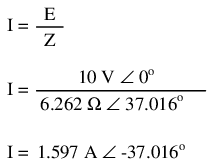
Al igual que en el circuito puramente inductivo, la onda de corriente va por detrás de la onda de tensión (de la fuente), aunque esta vez el retraso no es tan grande: sólo 37,016oen lugar de un total de 90ocomo era el caso en el circuito puramente inductivo. (Cifra below)
{kind=link}
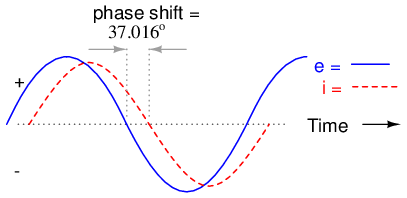
La corriente va por detrás del voltaje en un circuito serie L-R.
Para la resistencia y el inductor, las relaciones de fase entre voltaje y corriente no han cambiado. El voltaje a través de la resistencia está en fase (0ocambio) con la corriente a través de él; y el voltaje a través del inductor es +90odesfasado con la corriente que lo atraviesa. Podemos verificar esto matemáticamente:
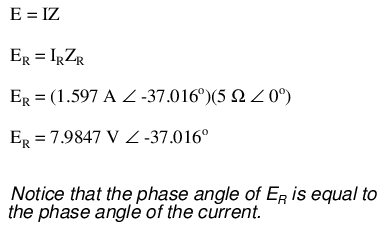
El voltaje a través de la resistencia tiene exactamente el mismo ángulo de fase que la corriente a través de ella, lo que nos indica que E e I están en fase (solo para la resistencia).
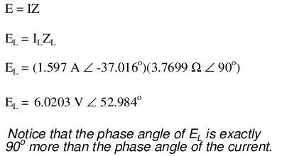
El voltaje a través del inductor tiene un ángulo de fase de 52,984o, mientras que la corriente a través del inductor tiene un ángulo de fase de -37,016o, una diferencia de exactamente 90oentre los dos. Esto nos dice que E y yo todavía tenemos 90 años.odesfasado (sólo para el inductor).
También podemos demostrar matemáticamente que estos valores complejos se suman para formar el voltaje total, tal como lo predeciría la Ley del Voltaje de Kirchhoff:
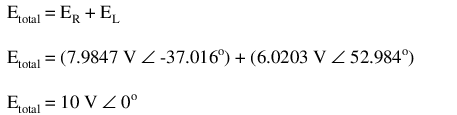
Comprobemos la validez de nuestros cálculos con SPICE: (Figura below)
{kind=link}
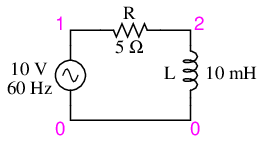
Circuito de especias: R-L.
ac r-l circuit v1 1 0 ac 10 sin r1 1 2 5 l1 2 0 10m .ac lin 1 60 60 .print ac v(1,2) v(2,0) i(v1) .print ac vp(1,2) vp(2,0) ip(v1) .end
freq v(1,2) v(2) i(v1) 6.000E+01 7.985E+00 6.020E+00 1.597E+00 freq vp(1,2) vp(2) ip(v1) 6.000E+01 -3.702E+01 5.298E+01 1.430E+02
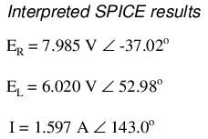
Tenga en cuenta que, al igual que con los circuitos de CC, SPICE genera cifras de corriente como si fueran negativas (180odesfasado) con la tensión de alimentación. En lugar de un ángulo de fase de -37,016o, obtenemos un ángulo de fase actual de 143o(-37o+ 180o). Esto es simplemente una idiosincrasia de SPICE y no representa nada significativo en la simulación del circuito en sí. Observe cómo las lecturas de fase de voltaje de la resistencia y del inductor coinciden con nuestros cálculos (-37,02oy 52,98o, respectivamente), tal como esperábamos que lo hicieran.
Con todas estas cifras a tener en cuenta incluso para un circuito tan simple como este, sería beneficioso para nosotros utilizar el método de la “tabla”. La aplicación de una tabla a este circuito simple de resistencia-inductor en serie procedería como tal. Primero, elabore una tabla para las cifras E/I/Z e inserte todos los valores de los componentes en estos términos (en otras palabras, no inserte valores reales de resistencia o inductancia en ohmios y Henrys, respectivamente, en la tabla; más bien, conviértalos en figuras complejas de impedancia y escríbalas en):
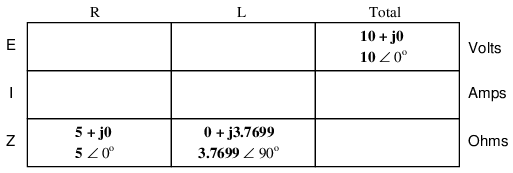
Aunque no es necesario, me resulta útil escribiramboslas formas rectangular y polar de cada cantidad en la tabla. Si está utilizando una calculadora que tiene la capacidad de realizar aritmética compleja sin la necesidad de realizar conversiones entre formas rectangulares y polares, entonces esta documentación adicional es completamente innecesaria. Sin embargo, si se ve obligado a realizar aritmética compleja “a mano” (suma y resta en forma rectangular, y multiplicación y división en forma polar), escribir cada cantidad en ambas formas será realmente útil.
Ahora que nuestras cifras "dadas" están insertadas en sus respectivas ubicaciones en la tabla, podemos proceder igual que con DC: determinar la impedancia total a partir de las impedancias individuales. Como se trata de un circuito en serie, sabemos que la oposición al flujo de electrones (resistenciaorimpedancia) se suma para formar la oposición total:
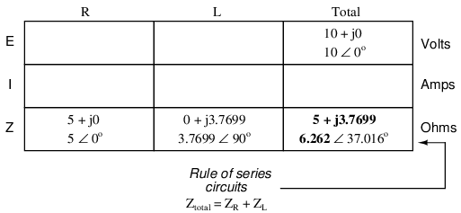
Ahora que conocemos el voltaje total y la impedancia total, podemos aplicar la Ley de Ohm (I=E/Z) para determinar la corriente total:
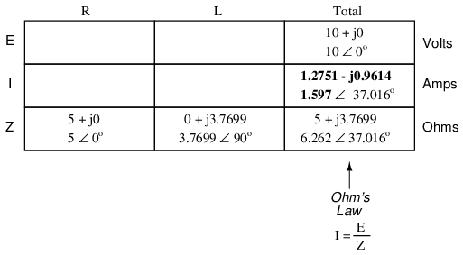
Al igual que con la CC, la corriente total en un circuito de CA en serie se comparte equitativamente entre todos los componentes. Esto sigue siendo cierto porque en un circuito en serie solo hay un camino para que fluyan los electrones, por lo tanto, la velocidad de su flujo debe ser uniforme en todo momento. En consecuencia, podemos transferir las cifras de corriente a las columnas tanto para la resistencia como para el inductor:
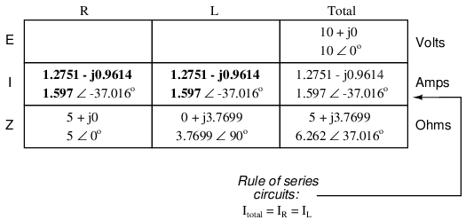
Ahora todo lo que queda por calcular es la caída de voltaje a través de la resistencia y el inductor, respectivamente. Esto se hace mediante el uso de la Ley de Ohm (E=IZ), aplicada verticalmente en cada columna de la tabla:
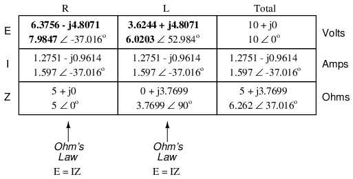
Y con eso, nuestra mesa está completa. Exactamente las mismas reglas que aplicamos en el análisis de circuitos de CC se aplican también a los circuitos de CA, con la salvedad de que todas las cantidades deben representarse y calcularse en forma compleja y no escalar. Mientras el cambio de fase esté representado adecuadamente en nuestros cálculos, no existe una diferencia fundamental en cómo abordamos el análisis básico de circuitos de CA versus CC.
Ahora es un buen momento para revisar la relación entre estas cifras calculadas y las lecturas dadas por las mediciones reales de voltaje y corriente de los instrumentos. Las cifras aquí que se relacionan directamente con mediciones de la vida real son las denotación polar¡No rectangular! En otras palabras, si conectara un voltímetro a través de la resistencia en este circuito, indicaría7.9847voltios, no 6,3756 (rectangular real) o 4,8071 (rectangular imaginario). Para describir esto en términos gráficos, los instrumentos de medición simplemente le dicen cuánto dura el vector para esa cantidad en particular (voltaje o corriente).
La notación rectangular, si bien es conveniente para la suma y resta aritmética, es una forma de notación más abstracta que la polar en relación con las mediciones del mundo real. Como dije antes, indicaré las formas polar y rectangular de cada cantidad en mis tablas de circuitos de CA simplemente por conveniencia del cálculo matemático. Esto no es absolutamente necesario, pero puede resultar útil para quienes lo siguen sin el beneficio de una calculadora avanzada. Si nos limitáramos al uso de una sola forma de notación, la mejor opción sería la polar, porque es la única que puede correlacionarse directamente con medidas reales.
La impedancia (Z) de un circuito en serie R-L se puede calcular, dada la resistencia (R) y la reactancia inductiva (XL). Como E=IR, E=IXL, y E=IZ, la resistencia, la reactancia y la impedancia son proporcionales al voltaje, respectivamente. Por tanto, el diagrama fasor de tensión se puede sustituir por un diagrama de impedancia similar. (Cifra below)
{kind=link}
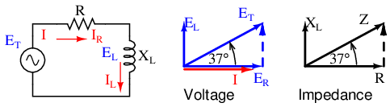
Serie: Diagrama fasorial de impedancia del circuito R-L.
Ejemplo:
Dado: una resistencia de 40 Ω en serie con un inductor de 79,58 milihenrios. Encuentre la impedancia a 60 hercios.
XL = 2πfL XL = 2π·60·79.58×10-3 XL = 30 Ω Z = R + jXL Z = 40 + j30 |Z| = sqrt(402 + 302) = 50 Ω ∠Z = arctangent(30/40) = 36.87o Z = 40 + j30 = 50∠36.87o
- REVISAR:
- Impedanciaes la medida total de oposición a la corriente eléctrica y es la suma compleja (vectorial) de la resistencia (“real”) y la reactancia (“imaginaria”). Está simbolizado por la letra “Z” y se mide en ohmios, al igual que la resistencia (R) y la reactancia (X).
- Las impedancias (Z) se gestionan igual que las resistencias (R) en el análisis de circuitos en serie: las impedancias en serie se suman para formar la impedancia total. ¡Solo asegúrese de realizar todos los cálculos en forma compleja (no escalar)! zTotal = Z1 + Z2+ . . . zn
- Una impedancia puramente resistiva siempre tendrá un ángulo de fase exactamente 0o (ZR= R Ω ∠ 0o).
- Una impedancia puramente inductiva siempre tendrá un ángulo de fase de exactamente +90o (ZL = XLΩ ∠ 90o).
- Ley de Ohm para circuitos de CA: E = IZ ; Yo = E/Z; Z = E/I
- Cuando se mezclan resistencias e inductores en circuitos, la impedancia total tendrá un ángulo de fase entre 0 yoy +90o. La corriente del circuito tendrá un ángulo de fase entre 0oy -90o.
- Los circuitos de CA en serie exhiben las mismas propiedades fundamentales que los circuitos de CC en serie: la corriente es uniforme en todo el circuito, las caídas de voltaje se suman para formar el voltaje total y las impedancias se suman para formar la impedancia total.
Parallel resistor-inductor circuits
Tomemos los mismos componentes para nuestro circuito de ejemplo en serie y conectémoslos en paralelo: (Figura below)
{kind=link}
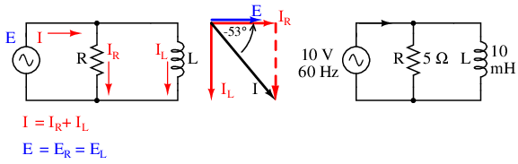
Circuito paralelo R-L.
Debido a que la fuente de energía tiene la misma frecuencia que el circuito de ejemplo en serie, y la resistencia y el inductor tienen los mismos valores de resistencia e inductancia, respectivamente, también deben tener los mismos valores de impedancia. Entonces, podemos comenzar nuestra tabla de análisis con los mismos valores "dados":
La única diferencia en nuestra técnica de análisis esta vez es que aplicaremos las reglas de circuitos en paralelo en lugar de las reglas de circuitos en serie. El enfoque es fundamentalmente el mismo que para DC. Sabemos que el voltaje lo comparten uniformemente todos los componentes en un circuito en paralelo, por lo que podemos transferir la cifra del voltaje total (10 voltios ∠ 0o) a todas las columnas de componentes:
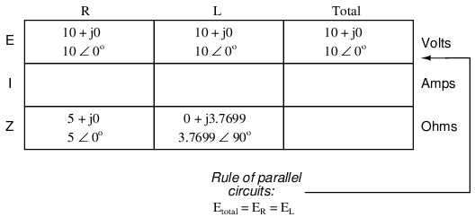
Ahora podemos aplicar la Ley de Ohm (I=E/Z) verticalmente a dos columnas de la tabla, calculando la corriente a través de la resistencia y la corriente a través del inductor:
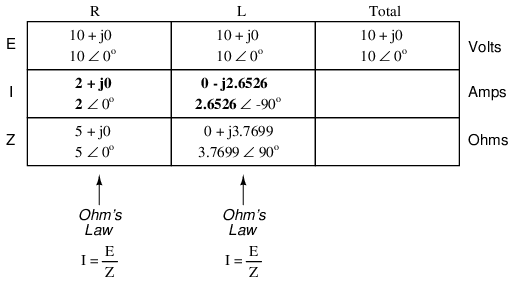
Al igual que con los circuitos de CC, las corrientes derivadas en un circuito de CA paralelo se suman para formar la corriente total (la ley de corrientes de Kirchhoff sigue siendo válida para CA como lo fue para CC):
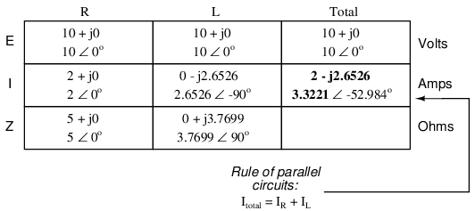
Finalmente, la impedancia total se puede calcular usando la Ley de Ohm (Z=E/I) verticalmente en la columna "Total". Por cierto, la impedancia paralela también se puede calcular utilizando una fórmula recíproca idéntica a la utilizada para calcular las resistencias paralelas.
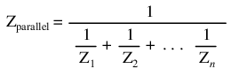
El único problema con el uso de esta fórmula es que normalmente implica muchas pulsaciones de teclas en la calculadora. Y si está decidido a ejecutar una fórmula como esta “a mano”, ¡prepárese para una gran cantidad de trabajo! Pero, al igual que con los circuitos de CC, a menudo tenemos múltiples opciones para calcular las cantidades en nuestras tablas de análisis, y este ejemplo no es diferente. No importa de qué manera calcules la impedancia total (Ley de Ohm o fórmula recíproca), llegarás a la misma cifra:
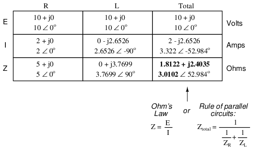
- REVISAR:
- Las impedancias (Z) se gestionan igual que las resistencias (R) en el análisis de circuitos en paralelo: las impedancias en paralelo disminuyen para formar la impedancia total, utilizando la fórmula recíproca. ¡Solo asegúrese de realizar todos los cálculos en forma compleja (no escalar)! zTotal= 1/(1/Z1+ 1/Z2+ . . . 1/Zn)
- Ley de Ohm para circuitos de CA: E = IZ ; Yo = E/Z; Z = E/I
- Cuando se mezclan resistencias e inductores en circuitos en paralelo (al igual que en los circuitos en serie), la impedancia total tendrá un ángulo de fase entre 0 yoy +90o. La corriente del circuito tendrá un ángulo de fase entre 0oy -90o.
- Los circuitos de CA paralelos exhiben las mismas propiedades fundamentales que los circuitos de CC paralelos: el voltaje es uniforme en todo el circuito, las corrientes derivadas se suman para formar la corriente total y las impedancias disminuyen (a través de la fórmula recíproca) para formar la impedancia total.
Inductor quirks
En un caso ideal, un inductor actúa como un dispositivo puramente reactivo. Es decir, su oposición a la corriente alterna se basa estrictamente en una reacción inductiva a los cambios de corriente y no en la fricción de los electrones como es el caso de los componentes resistivos. Sin embargo, los inductores no son tan puros en su comportamiento reactivo. Para empezar, están hechos de alambre y sabemos que todos los alambres poseen una cantidad mensurable de resistencia (a menos que sean alambres superconductores). Esta resistencia incorporada actúa como si estuviera conectada en serie con la inductancia perfecta de la bobina, así: (Figura below)
{kind=link}
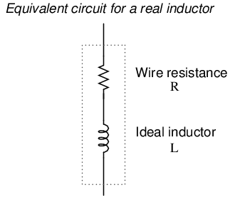
Inductor Circuito equivalente de un inductor real.
En consecuencia, la impedancia de cualquier inductor real siempre será una combinación compleja de resistencia y reactancia inductiva.
Para agravar este problema hay algo llamadoefecto piel, que es la tendencia de la CA a fluir a través de las áreas exteriores de la sección transversal de un conductor en lugar de por el medio. Cuando los electrones fluyen en una sola dirección (CC), utilizan toda el área de la sección transversal del conductor para moverse. Los electrones que cambian de dirección del flujo, por otro lado, tienden a evitar viajar a través del centro de un conductor, lo que limita el área de sección transversal efectiva disponible. El efecto cutáneo se vuelve más pronunciado a medida que aumenta la frecuencia.
Además, el campo magnético alterno de un inductor energizado con CA puede irradiarse hacia el espacio como parte de una onda electromagnética, especialmente si la CA es de alta frecuencia. Esta energía irradiada no regresa al inductor, por lo que se manifiesta como resistencia (disipación de potencia) en el circuito.
Además de las pérdidas resistivas del cable y la radiación, existen otros efectos en funcionamiento en los inductores con núcleo de hierro que se manifiestan como una resistencia adicional entre los conductores. Cuando un inductor se energiza con CA, los campos magnéticos alternos producidos tienden a inducir corrientes circulantes dentro del núcleo de hierro conocidas comocorrientes parásitas. Estas corrientes eléctricas en el núcleo de hierro tienen que superar la resistencia eléctrica que ofrece el hierro, que no es tan buen conductor como el cobre. Las pérdidas por corrientes parásitas se contrarrestan principalmente dividiendo el núcleo de hierro en muchas láminas delgadas (laminaciones), cada una separada de la otra por una fina capa de barniz eléctricamente aislante. Con la sección transversal del núcleo dividida en muchas secciones eléctricamente aisladas, la corriente no puede circular dentro de esa área de la sección transversal y no habrá (o habrá muy pocas) pérdidas resistivas por ese efecto.
Como era de esperar, las pérdidas por corrientes parásitas en los núcleos de inductores metálicos se manifiestan en forma de calor. El efecto es más pronunciado a frecuencias más altas y puede ser tan extremo que a veces se aprovecha en procesos de fabricación para calentar objetos metálicos. De hecho, este proceso de “calentamiento inductivo” se utiliza a menudo en operaciones de fundición de metales de alta pureza, donde los elementos y aleaciones metálicas deben calentarse en un ambiente de vacío para evitar la contaminación por aire y, por lo tanto, donde la tecnología de calentamiento por combustión estándar sería inútil. Se trata de una tecnología “sin contacto”, en la que la sustancia calentada no tiene que tocar la(s) bobina(s) que producen el campo magnético.
En el servicio de alta frecuencia, pueden desarrollarse corrientes parásitas incluso dentro de la sección transversal del propio cable, lo que contribuye a efectos resistivos adicionales. Para contrarrestar esta tendencia, se utiliza un alambre especial hecho de hilos muy finos aislados individualmente llamadoalambre litz(abreviatura deLitzendraht) se puede utilizar. El aislamiento que separa los hilos entre sí evita que las corrientes parásitas circulen por toda la sección transversal del cable.
Además, cualquier histéresis magnética que deba superarse con cada inversión del campo magnético del inductor constituye un gasto de energía que se manifiesta como resistencia en el circuito. Algunos materiales centrales (como la ferrita) son particularmente conocidos por su efecto histerético. La mejor manera de contrarrestar este efecto es mediante la selección adecuada del material del núcleo y límites en la intensidad máxima del campo magnético generado con cada ciclo.
En conjunto, las propiedades resistivas parásitas de un inductor real (resistencia del cable, pérdidas por radiación, corrientes parásitas y pérdidas por histéresis) se expresan bajo el único término de "resistencia efectiva": (Figura below)
{kind=link}
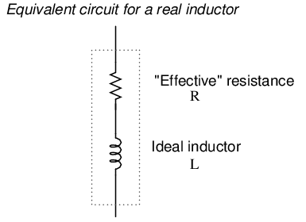
Circuito equivalente de un inductor real con pérdidas por efecto piel, radiación, corrientes parásitas e histéresis.
Vale la pena señalar que el efecto superficial y las pérdidas por radiación se aplican tan bien a tramos rectos de cable en un circuito de CA como a un cable enrollado. Por lo general, su efecto combinado es demasiado pequeño para notarlo, pero en frecuencias de radio pueden ser bastante grandes. Una antena transmisora de radio, por ejemplo, está diseñada con el objetivo expreso de disipar la mayor cantidad de energía en forma de radiación electromagnética.
La resistencia efectiva en un inductor puede ser una consideración seria para el diseñador de circuitos de CA. Para ayudar a cuantificar la cantidad relativa de resistencia efectiva en un inductor, existe otro valor llamadofactor q, o “factor de calidad” que se calcula de la siguiente manera:
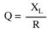
El símbolo “Q” no tiene nada que ver con la carga eléctrica (culombios), lo que tiende a confundir. Por alguna razón, los poderes fácticos decidieron utilizar la misma letra del alfabeto para indicar una cantidad totalmente diferente.
Cuanto mayor sea el valor de "Q", más "puro" será el inductor. Debido a que es tan fácil agregar resistencia adicional si es necesario, un inductor de Q alto es mejor que un inductor de Q bajo para fines de diseño. Un inductor ideal tendría una Q infinita, con resistencia efectiva cero.
Debido a que la reactancia inductiva (X) varía con la frecuencia, también lo hará Q. Sin embargo, dado que los efectos resistivos de los inductores (efecto de piel del cable, pérdidas por radiación, corrientes parásitas e histéresis) también varían con la frecuencia, Q no varía proporcionalmente con la reactancia. Para que un valor Q tenga un significado preciso, debe especificarse en una frecuencia de prueba particular.
La resistencia parásita no es la única peculiaridad del inductor que debemos tener en cuenta. Debido al hecho de que las múltiples vueltas de cable que componen los inductores están separadas entre sí por un espacio aislante (aire, barniz o algún otro tipo de aislamiento eléctrico), tenemos la posibilidad de que se desarrolle capacitancia entre vueltas. La capacitancia de CA se explorará en el próximo capítulo, pero basta decir en este punto que se comporta de manera muy diferente a la inductancia de CA y, por lo tanto, “contamina” aún más la pureza reactiva de los inductores reales.
More on the “skin effect”
Como se mencionó anteriormente, el efecto piel es donde la corriente alterna tiende a evitar viajar por el centro de un conductor sólido, limitándose a la conducción cerca de la superficie. Esto limita efectivamente el área de la sección transversal del conductor disponible para transportar un flujo de electrones alterno, aumentando la resistencia de ese conductor por encima de lo que normalmente sería para corriente continua: (Figura below)
{kind=link}
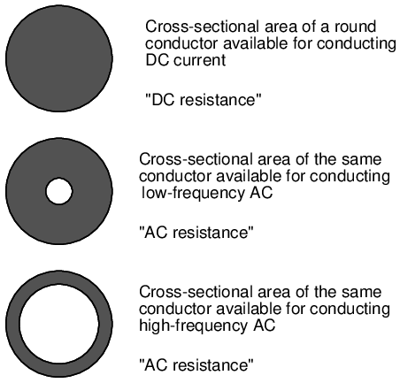
Efecto piel: la profundidad de la piel disminuye al aumentar la frecuencia.
La resistencia eléctrica del conductor con toda su sección transversal en uso se conoce como “resistencia CC”, la “resistencia CA” del mismo conductor se refiere a una cifra mayor resultante del efecto piel. Como puede ver, a altas frecuencias la corriente alterna evita viajar a través de la mayor parte del área de la sección transversal del conductor. ¡Para conducir corriente, el cable también podría ser hueco!
En algunas aplicaciones de radio (antenas, sobre todo) se aprovecha este efecto. Dado que las corrientes CA de radiofrecuencia (“RF”) no viajarían a través del centro de un conductor de todos modos, ¿por qué no utilizar varillas metálicas huecas en lugar de cables metálicos sólidos y ahorrar peso y costo? (Cifra below) Por este motivo, la mayoría de las estructuras de antena y los conductores de alimentación de RF están hechos de tubos metálicos huecos.
{kind=link}
En la siguiente fotografía se pueden ver algunos inductores grandes utilizados en un circuito de transmisión de radio de 50 kW. Los inductores son tubos huecos de cobre recubiertos de plata, para una excelente conductividad en la “piel” del tubo:
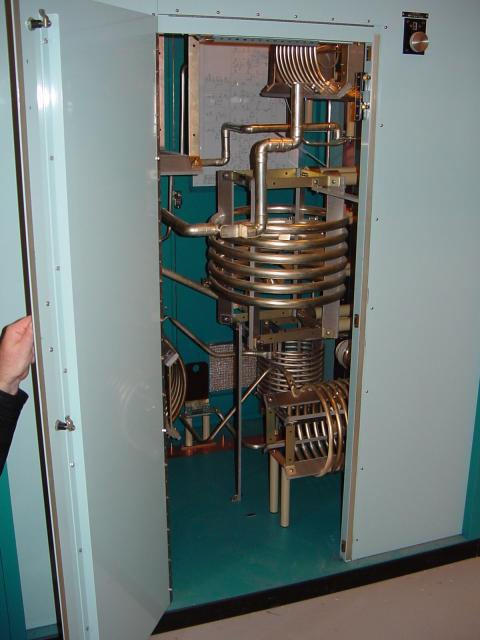
Inductores de alta potencia formados a partir de tubos huecos.
El grado en que la frecuencia afecta la resistencia efectiva de un conductor de alambre sólido depende del calibre de ese alambre. Como regla general, los cables de gran calibre exhiben un efecto superficial más pronunciado (cambio en la resistencia de CC) que los cables de pequeño calibre a cualquier frecuencia determinada. La ecuación para aproximar el efecto piel a altas frecuencias (superiores a 1 MHz) es la siguiente:
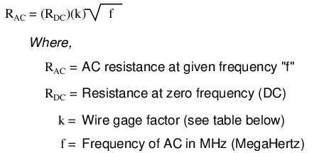
Mesa belowproporciona valores aproximados del factor “k” para varios tamaños de alambre redondo.
“k” factor for various AWG wire sizes.
| tamaño del calibre | factor k | tamaño del calibre | factor k |
|---|---|---|---|
| 4/0 | 124.5 | 8 | 34.8 |
| 2/0 | 99.0 | 10 | 27.6 |
| 1/0 | 88.0 | 14 | 17.6 |
| 2 | 69.8 | 18 | 10.9 |
| 4 | 55.5 | 22 | 6.86 |
| 6 | 47.9 | - | - |
Por ejemplo, una longitud de cable de calibre número 10 con una resistencia CC de extremo a extremo de 25 Ω tendría una resistencia CA (efectiva) de 2,182 kΩ a una frecuencia de 10 MHz:
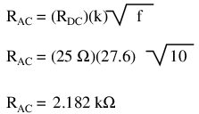
Recuerde que esta cifra esnotimpedancia, y lo hacenotconsidere cualquier efecto reactivo, inductivo o capacitivo. Esta es simplemente una cifra estimada de resistencia pura para el conductor (esa oposición al flujo de electrones de CA quehacedisipar energía en forma de calor), corregido por el efecto piel. La reactancia y los efectos combinados de la reactancia y la resistencia (impedancia) son cuestiones completamente diferentes.
Contributors
Los contribuyentes a este capítulo se enumeran en orden cronológico de sus contribuciones, desde el más reciente hasta el primero. Consulte el Apéndice 2 (Lista de colaboradores) para fechas e información de contacto.
Jim Palmer(Junio de 2001): Se identificó y se ofreció corrección de errores tipográficos en el cálculo de números complejos.
Jason Stark(Junio de 2000): Formato de documentos HTML, que dio lugar a una segunda edición mucho más atractiva.
Lecciones en circuitos eléctricoscopyright (C) 2000-2023 Tony R. Kuphaldt, según los términos y condiciones delCC BY License.